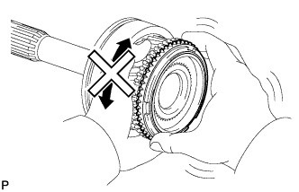
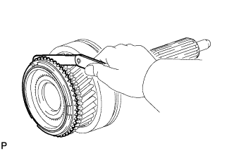

INPUT SHAFT > INSPECTION |
| 1. INSPECT NO. 2 SYNCHRONIZER RING |
 |
Check for wear or damage.
Coat the gear cone with gear oil. Check the braking effect of the synchronizer ring. Turn the synchronizer ring in one direction while pushing it to the gear cone. Check that the ring locks.
 |
Using a feeler gauge, measure the clearance between the synchronizer ring back and gear spline end.